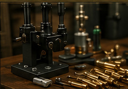
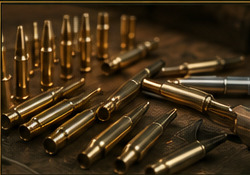
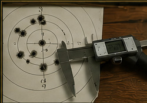
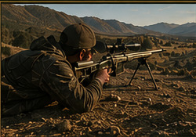

Precision Reloading Guidance
Help with equipment selection, components, reloading practices and getting the most from your rifle.
We are happy to help customers get more from their equipment, ammunition and time behind the rifle.

Help with equipment selection, components, reloading practices and getting the most from your rifle.

We carry precision reloading equipment and supplies from quality manufacturers and use precision reloading equipment ourselves.

Our load-development process is tailored to your rifle and goals, with an emphasis on accuracy, consistency and practical performance. This is an additional-charge service.

From equipment setup to practical fundamentals, we're happy to share what we've learned through formal training and regular long-range shooting.